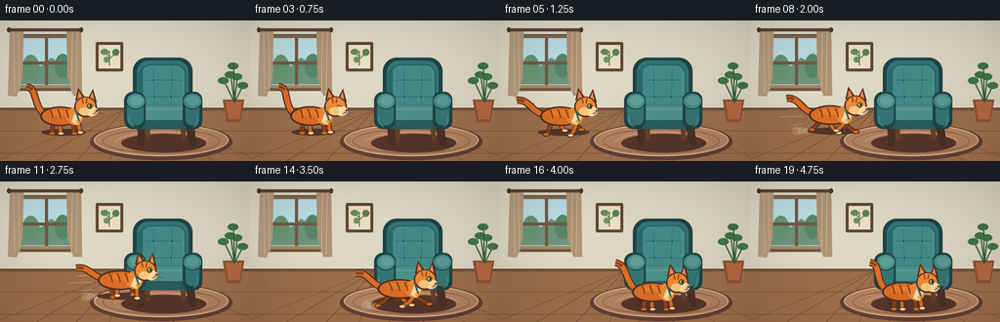
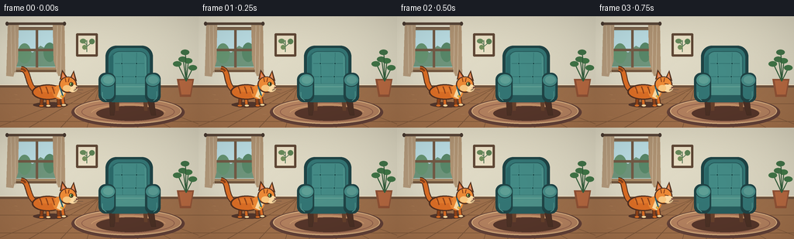

CODING AGENTS AS PIXEL WORLD MODELS
traex/GPT-5.6-Sol · dynamic_spatial_relationship_0006
点击播放 · 原生 RGB 像素
此结果可播放，但该运行尚未通过最终提交审核。页面展示不代表评测通过。
逐轮保存的候选
回放视频、检查图与代码变化。
每份候选均可单独播放。实际图片检查记录在下方工具轨迹中。
候选 01播放与检查图
点击播放 · 原生 RGB 像素

展开代码变化
--- 上一保存版本 +++ 本次保存版本 @@ -0,0 +1,342 @@ +from pathlib import Path +import math +import numpy as np +from PIL import Image, ImageDraw, ImageFilter +import artifact_io + +# Fixed, hand-illustrated scene rendered large and downsampled for smooth edges. +W, H, N = 256, 144, 20 +S = 4 +SW, SH = W * S, H * S +rng = np.random.default_rng(20261109) + + +def sc(v): + return int(round(v * S)) + + +def box(x0, y0, x1, y1): + return (sc(x0), sc(y0), sc(x1), sc(y1)) + + +def pts(seq): + return [(sc(x), sc(y)) for x, y in seq] + + +def line(draw, xy, fill, width=1, joint="curve"): + draw.line(pts(xy), fill=fill, width=max(1, sc(width)), joint=joint) + + +def cubic(p0, p1, p2, p3, steps=28): + out = [] + for t in np.linspace(0, 1, steps): + q = 1 - t + out.append(( + q**3*p0[0] + 3*q*q*t*p1[0] + 3*q*t*t*p2[0] + t**3*p3[0], + q**3*p0[1] + 3*q*q*t*p1[1] + 3*q*t*t*p2[1] + t**3*p3[1], + )) + return out + + +def make_room(): + yy, xx = np.mgrid[0:SH, 0:SW] + yf = yy / S + xf = xx / S + arr = np.zeros((SH, SW, 3), dtype=np.float32) + wall = yf < 91 + # Warm ivory plaster, illuminated from the left window. + glow = 8 * np.exp(-((xf - 48) / 65) ** 2 - ((yf - 42) / 62) ** 2) + arr[..., 0] = np.where(wall, 224 + glow - 0.05*yf, 157 + 0.20*(yf-91)) + arr[..., 1] = np.where(wall, 218 + glow - 0.04*yf, 112 + 0.08*(yf-91)) + arr[..., 2] = np.where(wall, 196 + glow - 0.02*yf, 76 + 0.02*(yf-91)) + noise = rng.normal(0, 0.75, (SH, SW, 1)) + arr += noise + arr = np.uint8(np.clip(arr, 0, 255)) + im = Image.fromarray(arr, "RGB") + d = ImageDraw.Draw(im) + + # Window recess and soft daylight. + d.rounded_rectangle(box(16, 14, 78, 70), radius=sc(3), fill=(130, 105, 79), outline=(102, 77, 59), width=sc(1)) + d.rectangle(box(20, 18, 74, 66), fill=(177, 215, 220)) + # Sky panes and a distant garden silhouette. + d.rectangle(box(21, 19, 73, 46), fill=(189, 224, 230)) + d.polygon(pts([(21, 49), (31, 41), (42, 47), (52, 38), (65, 45), (73, 40), (73, 65), (21, 65)]), fill=(112, 151, 126)) + d.ellipse(box(23, 35, 40, 61), fill=(104, 151, 116)) + d.ellipse(box(56, 34, 72, 59), fill=(89, 137, 106)) + d.rectangle(box(46, 18, 49, 67), fill=(116, 91, 70)) + d.rectangle(box(19, 42, 75, 45), fill=(116, 91, 70)) + d.rectangle(box(14, 68, 80, 72), fill=(116, 88, 64)) + d.rectangle(box(17, 66, 77, 69), fill=(170, 139, 102)) + # Linen curtains. + d.polygon(pts([(10, 10), (24, 10), (23, 58), (17, 78), (8, 77)]), fill=(183, 157, 126)) + d.polygon(pts([(68, 10), (83, 10), (84, 77), (75, 77), (69, 57)]), fill=(177, 149, 117)) + for x in (14, 19, 74, 79): + line(d, [(x, 12), (x + (1 if x < 40 else -1), 74)], (204, 184, 156), .65) + d.rectangle(box(8, 8, 84, 11), fill=(91, 71, 57)) + d.ellipse(box(7, 7, 11, 12), fill=(74, 59, 49)) + d.ellipse(box(81, 7, 85, 12), fill=(74, 59, 49)) + + # Small framed botanical print balances the composition. + d.rounded_rectangle(box(98, 22, 126, 52), radius=sc(1.5), fill=(95, 71, 53)) + d.rectangle(box(101, 25, 123, 49), fill=(235, 225, 198)) + line(d, [(112, 46), (112, 31)], (75, 111, 77), 1) + line(d, [(112, 37), (106, 32)], (75, 111, 77), .8) + line(d, [(112, 39), (119, 33)], (75, 111, 77), .8) + d.ellipse(box(103, 29, 111, 35), fill=(104, 139, 92)) + d.ellipse(box(115, 29, 122, 36), fill=(92, 129, 84)) + d.ellipse(box(106, 37, 112, 43), fill=(117, 145, 94)) + + # Baseboard and perspective floorboards. + d.rectangle(box(0, 88, 256, 92), fill=(112, 83, 61)) + d.rectangle(box(0, 88, 256, 89), fill=(239, 225, 198)) + line(d, [(0, 113), (256, 113)], (128, 89, 59), .7) + line(d, [(0, 136), (256, 136)], (128, 89, 59), .8) + for x in (-5, 37, 78, 112, 143, 178, 220, 269): + line(d, [(128, 91), (x, 144)], (126, 87, 58), .7) + # Tiny wood highlights. + for _ in range(35): + y = float(rng.uniform(96, 143)) + x = float(rng.uniform(0, 256)) + ln = float(rng.uniform(2, 8)) + line(d, [(x, y), (min(256, x+ln), y)], (181, 133, 89), .35) + + # Oval rug under the chair makes depth ordering unmistakable. + d.ellipse(box(92, 105, 238, 143), fill=(101, 66, 56)) + d.ellipse(box(96, 106, 234, 139), fill=(183, 132, 97), outline=(223, 181, 133), width=sc(1.2)) + d.ellipse(box(105, 111, 225, 136), outline=(145, 95, 76), width=sc(1)) + d.arc(box(117, 114, 214, 138), 188, 350, fill=(221, 170, 119), width=sc(.8)) + + # Plant on far right, deliberately behind the chair. + d.polygon(pts([(228, 81), (250, 81), (246, 104), (232, 104)]), fill=(146, 83, 54)) + d.polygon(pts([(231, 83), (248, 83), (245, 101), (234, 101)]), fill=(183, 105, 65)) + for a, bx, by in [(-16, 229, 61), (-8, 236, 55), (7, 243, 57), (15, 249, 66), (1, 239, 46)]: + line(d, [(240, 84), (bx, by)], (55, 96, 62), 1.2) + d.ellipse(box(bx-6, by-3, bx+5, by+4), fill=(65, 113 + (a % 10), 71)) + + return im + + +BASE = make_room() + + +def draw_chair(im): + d = ImageDraw.Draw(im) + # Grounding shadow. + d.ellipse(box(124, 116, 211, 135), fill=(88, 55, 43)) + # Tapered walnut legs, behind upholstery. + d.polygon(pts([(140, 103), (150, 103), (147, 128), (142, 128)]), fill=(77, 50, 38), outline=(54, 38, 31)) + d.polygon(pts([(188, 103), (198, 103), (201, 128), (195, 128)]), fill=(76, 49, 37), outline=(54, 38, 31)) + d.polygon(pts([(148, 105), (154, 105), (153, 122), (149, 122)]), fill=(104, 66, 45)) + d.polygon(pts([(184, 105), (190, 105), (190, 122), (186, 122)]), fill=(104, 66, 45)) + + outline = (31, 68, 70) + deep = (38, 89, 90) + teal = (52, 118, 117) + light = (68, 139, 134) + hi = (86, 154, 147) + + # Rounded high back and inner cushion. + d.rounded_rectangle(box(136, 38, 197, 103), radius=sc(14), fill=outline) + d.rounded_rectangle(box(140, 41, 193, 101), radius=sc(12), fill=teal) + d.rounded_rectangle(box(144, 45, 190, 96), radius=sc(10), fill=light, outline=deep, width=sc(1)) + # Subtle upholstery side shading. + d.polygon(pts([(141, 53), (146, 47), (146, 94), (141, 99)]), fill=(43, 105, 105)) + line(d, [(187, 52), (188, 88)], hi, .8) + # Tufting seams and buttons. + line(d, [(148, 61), (186, 61)], (48, 112, 110), .7) + line(d, [(148, 78), (187, 78)], (48, 112, 110), .7) + line(d, [(157, 48), (158, 91)], (47, 108, 108), .55) + line(d, [(176, 47), (175, 92)], (47, 108, 108), .55) + for x, y in [(157, 61), (176, 61), (158, 78), (175, 78)]: + d.ellipse(box(x-1.6, y-1.6, x+1.6, y+1.6), fill=(29, 82, 83), outline=(91, 160, 150), width=sc(.45)) + + # Seat: a perspective cushion projecting toward the viewer. + d.polygon(pts([(143, 87), (191, 87), (197, 108), (138, 108)]), fill=outline) + d.polygon(pts([(145, 87), (189, 87), (193, 102), (141, 102)]), fill=(78, 146, 138), outline=deep) + d.polygon(pts([(141, 102), (193, 102), (190, 111), (144, 111)]), fill=(40, 94, 94)) + line(d, [(147, 91), (187, 91)], (111, 171, 158), .7) + + # Rolled arms, strongest visual chair cue. + d.rounded_rectangle(box(127, 73, 149, 111), radius=sc(9), fill=outline) + d.rounded_rectangle(box(130, 76, 147, 107), radius=sc(7), fill=teal) + d.ellipse(box(129, 74, 149, 91), fill=(75, 145, 138), outline=outline, width=sc(1)) + d.ellipse(box(133, 77, 146, 87), fill=(95, 159, 149)) + d.rounded_rectangle(box(187, 73, 207, 111), radius=sc(8), fill=outline) + d.rounded_rectangle(box(190, 76, 204, 107), radius=sc(6), fill=teal) + d.ellipse(box(187, 74, 207, 91), fill=(69, 137, 132), outline=outline, width=sc(1)) + d.ellipse(box(191, 77, 204, 87), fill=(90, 154, 146)) + # Front upholstery piping. + line(d, [(132, 98), (132, 105), (137, 109)], (91, 160, 151), .65) + line(d, [(202, 97), (202, 106), (198, 109)], (84, 151, 145), .65) + + +def cat_path(frame): + if frame <= 4: + return 65.0, 99.0, False, 0.0 + if frame <= 15: + u = (frame - 5) / 10.0 + e = u*u*(3 - 2*u) + # It runs right and down-screen: down-screen is toward the viewer/front. + x = 65 + 94*e + y = 99 + 15*e - 5.5*math.sin(math.pi*e) + return x, y, True, u + return 159.0, 114.0, False, 1.0 + + +def draw_speed_effects(im, frame, cx, cy, running, u): + if not running or frame <= 5: + return + d = ImageDraw.Draw(im, "RGBA") + strength = math.sin(math.pi * min(1, max(0, u))) + # Restrained motion lines behind only; no duplicate/ghost cats. + for j, (dy, ln) in enumerate([(-7, 17), (0, 25), (8, 13)]): + alpha = int(105 * strength) - j*10 + if alpha > 0: + line(d, [(cx-30-ln, cy+dy), (cx-31, cy+dy-1)], (246, 226, 187, alpha), 1.0) + # Dust puffs sit at floor contact. + if frame in (8, 11, 14): + for j in range(3): + ox = -28 - j*5 + r = 2.8 + j*.9 + d.ellipse(box(cx+ox-r, cy+14-r, cx+ox+r, cy+14+r), fill=(232, 204, 166, 95-j*18)) + + +def draw_cat(im, frame, cx, cy, running, u): + d = ImageDraw.Draw(im) + if running: + phase = 2*math.pi*((frame-5)*0.47) + bounce = -2.0*abs(math.sin(phase)) + stretch = 2.0*abs(math.sin(phase)) + else: + phase = frame*0.65 + bounce = -0.35*math.sin(phase) + stretch = 0 + cy += bounce + + ink = (82, 48, 32) + dark = (143, 67, 26) + orange = (222, 111, 38) + gold = (239, 139, 54) + cream = (255, 221, 164) + + # Soft contact shadow: it grows slightly as the cat reaches the foreground. + shadow_w = 45 + (8 if running else 0) + d.ellipse(box(cx-shadow_w/2, cy+12, cx+shadow_w/2, cy+19), fill=(83, 55, 44)) + + # Tail is behind the body, with an expressive upright curl while waiting. + sway = 2.8*math.sin(frame*.7) + if running: + tail_curve = cubic((cx-19, cy-2), (cx-34, cy-6), (cx-35, cy-18+sway), (cx-48, cy-16+sway), 30) + else: + tail_curve = cubic((cx-18, cy-2), (cx-32, cy-11), (cx-26+sway, cy-30), (cx-38+sway, cy-31), 30) + line(d, tail_curve, ink, 7.5) + line(d, tail_curve, orange, 5.2) + # Tail tip and stripes. + if len(tail_curve) > 8: + line(d, tail_curve[-8:], dark, 3.0) + + # Legs are drawn first so they tuck naturally beneath the torso. + hip_y = cy + 4 + if running: + s = math.sin(phase) + c = math.cos(phase) + legs = [ + (cx-12, hip_y, cx-18-8*s, cy+16+2*c), + (cx-6, hip_y, cx+1+8*s, cy+16-2*c), + (cx+9, hip_y, cx+18+9*s, cy+15-2*c), + (cx+14, hip_y, cx+7-8*s, cy+17+2*c), + ] + else: + legs = [ + (cx-11, hip_y, cx-12, cy+17), + (cx-4, hip_y, cx-3, cy+17), + (cx+10, hip_y, cx+11, cy+17), + (cx+15, hip_y, cx+17, cy+16), + ] + # Far legs are darker. + for k, (x0,y0,x1,y1) in enumerate(legs): + col = dark if k in (0,2) else orange + line(d, [(x0,y0), ((x0+x1)/2, y1-5), (x1,y1)], ink, 5.0) + line(d, [(x0,y0), ((x0+x1)/2, y1-5), (x1,y1)], col, 3.2) + d.ellipse(box(x1-3.5, y1-2, x1+4, y1+1.7), fill=ink) + d.ellipse(box(x1-2.5, y1-1.6, x1+3, y1+.8), fill=cream if k in (1,3) else orange) + + # Torso and shoulder. + d.ellipse(box(cx-24-stretch, cy-11, cx+17+stretch, cy+9), fill=ink) + d.ellipse(box(cx-22-stretch, cy-9.5, cx+16+stretch, cy+7.5), fill=orange) + d.ellipse(box(cx+3, cy-10, cx+20, cy+8), fill=gold) + # Warm highlight and belly/chest tuft. + d.ellipse(box(cx-15, cy-7.5, cx+7, cy-1), fill=(231, 124, 45)) + d.polygon(pts([(cx+12, cy-5), (cx+19, cy-1), (cx+14, cy+8), (cx+8, cy+5)]), fill=cream) + + # Tabby stripes follow the body curvature. + for ox in (-12, -4, 4): + line(d, [(cx+ox-2, cy-8), (cx+ox, cy-3), (cx+ox+1, cy+1)], dark, 1.5) + + # Head, ears and face. Profile remains legible throughout the run. + hx, hy = cx + 21 + stretch*.25, cy - 10 + # Ears with dark outlines. + d.polygon(pts([(hx-9, hy-7), (hx-6, hy-20), (hx+1, hy-10)]), fill=ink) + d.polygon(pts([(hx+4, hy-9), (hx+9, hy-19), (hx+13, hy-5)]), fill=ink) + d.polygon(pts([(hx-7.2, hy-8), (hx-5.5, hy-17), (hx-.3, hy-9)]), fill=orange) + d.polygon(pts([(hx+5.5, hy-8), (hx+8.5, hy-16), (hx+11, hy-5)]), fill=gold) + d.polygon(pts([(hx-5.4, hy-10), (hx-5.4, hy-15), (hx-2, hy-10)]), fill=(224, 142, 114)) + d.polygon(pts([(hx+7, hy-9), (hx+8.4, hy-14), (hx+10, hy-7)]), fill=(224, 142, 114)) + d.ellipse(box(hx-10, hy-11, hx+13, hy+10), fill=ink) + d.ellipse(box(hx-8.5, hy-10, hx+11.5, hy+8.5), fill=gold) + # Forehead stripes. + line(d, [(hx-2, hy-9), (hx-1, hy-4)], dark, 1.2) + line(d, [(hx+3, hy-9), (hx+2, hy-4)], dark, 1.2) + # Cream muzzle and cheek. + d.ellipse(box(hx+1, hy-1, hx+14, hy+9), fill=cream) + d.ellipse(box(hx-5, hy, hx+5, hy+8), fill=(250, 201, 129)) + + # Eye blinks once while waiting, but remains open during the action and finale. + blink = frame in (3,) + if blink: + line(d, [(hx+3, hy-2), (hx+8, hy-1)], ink, 1.1) + else: + d.ellipse(box(hx+3, hy-4, hx+8.5, hy+1.5), fill=ink) + d.ellipse(box(hx+4, hy-3.2, hx+7.7, hy+.6), fill=(137, 177, 84)) + d.ellipse(box(hx+6.1, hy-3, hx+7.2, hy+.4), fill=(25, 33, 24)) + d.ellipse(box(hx+4.4, hy-2.8, hx+5.3, hy-1.9), fill=(245, 250, 218)) + # Nose, mouth, whiskers. + d.polygon(pts([(hx+12, hy+2), (hx+15, hy+3.6), (hx+12, hy+5)]), fill=(112, 58, 52)) + line(d, [(hx+12,hy+5), (hx+9,hy+6.5)], ink, .65) + line(d, [(hx+10,hy+4), (hx+20,hy+1.5)], (102,79,64), .55) + line(d, [(hx+10,hy+6), (hx+21,hy+6)], (102,79,64), .55) + line(d, [(hx+9,hy+7), (hx+19,hy+10)], (102,79,64), .55) + + # A tiny collar gives continuity from frame to frame. + line(d, [(cx+12, cy-8), (cx+16, cy+4)], (47, 99, 113), 1.8) + d.ellipse(box(cx+13, cy+3, cx+16, cy+6), fill=(244, 191, 59), outline=ink, width=sc(.35)) + + +def render_frame(i): + im = BASE.copy() + draw_chair(im) + cx, cy, running, u = cat_path(i) + draw_speed_effects(im, i, cx, cy, running, u) + draw_cat(im, i, cx, cy, running, u) + + # Gentle lens vignette, consistent across the locked-off camera shot. + arr = np.asarray(im).astype(np.float32) + yy, xx = np.mgrid[0:SH, 0:SW] + nx = (xx - SW/2)/(SW/2) + ny = (yy - SH/2)/(SH/2) + vig = np.clip(1.0 - .075*(nx*nx + ny*ny), .86, 1.0)[..., None] + arr *= vig + im = Image.fromarray(np.uint8(np.clip(arr, 0, 255)), "RGB") + im = im.resize((W, H), Image.Resampling.LANCZOS) + return np.asarray(im, dtype=np.uint8) + + +def main(): + frames = np.stack([render_frame(i) for i in range(N)], axis=0) + assert frames.shape == (20, 144, 256, 3) + assert frames.dtype == np.uint8 + artifact_io.save(frames, Path(__file__).resolve().parent) + + +if __name__ == "__main__": + main()
候选 02播放与检查图
点击播放 · 原生 RGB 像素


展开代码变化
--- 上一保存版本
+++ 本次保存版本
@@ -52,7 +52,7 @@
noise = rng.normal(0, 0.75, (SH, SW, 1))
arr += noise
arr = np.uint8(np.clip(arr, 0, 255))
- im = Image.fromarray(arr, "RGB")
+ im = Image.fromarray(arr)
d = ImageDraw.Draw(im)
# Window recess and soft daylight.
@@ -326,7 +326,7 @@
ny = (yy - SH/2)/(SH/2)
vig = np.clip(1.0 - .075*(nx*nx + ny*ny), .86, 1.0)[..., None]
arr *= vig
- im = Image.fromarray(np.uint8(np.clip(arr, 0, 255)), "RGB")
+ im = Image.fromarray(np.uint8(np.clip(arr, 0, 255)))
im = im.resize((W, H), Image.Resampling.LANCZOS)
return np.asarray(im, dtype=np.uint8)
可观测工具轨迹
实际执行的命令与返回图片。
命令 1exit 0
/bin/bash -lc "cat prompt.txt && printf '\\n--- GENERATION_RULES ---\\n' && cat GENERATION_RULES.md"
命令 2exit 0
/bin/bash -lc "cat task_spec.json && printf '\\n--- FILES ---\\n' && find . -maxdepth 2 -type f -printf '%p\\n' | sort"
命令 3exit 0
/bin/bash -lc "which ffmpeg || true; which python3 || true; python3 - <<'PY' mods=['PIL','numpy','cv2','imageio'] for m in mods: try: x=__import__(m); print(m,'OK',getattr(x,'__version__','')) except Exception as e: print(m,'NO',e) PY"
命令 4exit 0
/bin/bash -lc 'cat artifact_io.py'
命令 5exit 0
/bin/bash -lc 'fc-list | head -20 || true'
命令 6exit 0
/bin/bash -lc "cat > generate.py <<'PY'
from pathlib import Path
import math
import numpy as np
from PIL import Image, ImageDraw, ImageFilter
import artifact_io
# Fixed, hand-illustrated scene rendered large and downsampled for smooth edges.
W, H, N = 256, 144, 20
S = 4
SW, SH = W * S, H * S
rng = np.random.default_rng(20261109)
def sc(v):
return int(round(v * S))
def box(x0, y0, x1, y1):
return (sc(x0), sc(y0), sc(x1), sc(y1))
def pts(seq):
return [(sc(x), sc(y)) for x, y in seq]
def line(draw, xy, fill, width=1, joint=\"curve\"):
draw.line(pts(xy), fill=fill, width=max(1, sc(width)), joint=joint)
def cubic(p0, p1, p2, p3, steps=28):
out = []
for t in np.linspace(0, 1, steps):
q = 1 - t
out.append((
q**3*p0[0] + 3*q*q*t*p1[0] + 3*q*t*t*p2[0] + t**3*p3[0],
q**3*p0[1] + 3*q*q*t*p1[1] + 3*q*t*t*p2[1] + t**3*p3[1],
))
return out
def make_room():
yy, xx = np.mgrid[0:SH, 0:SW]
yf = yy / S
xf = xx / S
arr = np.zeros((SH, SW, 3), dtype=np.float32)
wall = yf < 91
# Warm ivory plaster, illuminated from the left window.
glow = 8 * np.exp(-((xf - 48) / 65) ** 2 - ((yf - 42) / 62) ** 2)
arr[..., 0] = np.where(wall, 224 + glow - 0.05*yf, 157 + 0.20*(yf-91))
arr[..., 1] = np.where(wall, 218 + glow - 0.04*yf, 112 + 0.08*(yf-91))
arr[..., 2] = np.where(wall, 196 + glow - 0.02*yf, 76 + 0.02*(yf-91))
noise = rng.normal(0, 0.75, (SH, SW, 1))
arr += noise
arr = np.uint8(np.clip(arr, 0, 255))
im = Image.fromarray(arr, \"RGB\")
d = ImageDraw.Draw(im)
# Window recess and soft daylight.
d.rounded_rectangle(box(16, 14, 78, 70), radius=sc(3), fill=(130, 105, 79), outline=(102, 77, 59), width=sc(1))
d.rectangle(box(20, 18, 74, 66), fill=(177, 215, 220))
# Sky panes and a distant garden silhouette.
d.rectangle(box(21, 19, 73, 46), fill=(189, 224, 230))
d.polygon(pts([(21, 49), (31, 41), (42, 47), (52, 38), (65, 45), (73, 40), (73, 65), (21, 65)]), fill=(112, 151, 126))
d.ellipse(box(23, 35, 40, 61), fill=(104, 151, 116))
d.ellipse(box(56, 34, 72, 59), fill=(89, 137, 106))
d.rectangle(box(46, 18, 49, 67), fill=(116, 91, 70))
d.rectangle(box(19, 42, 75, 45), fill=(116, 91, 70))
d.rectangle(box(14, 68, 80, 72), fill=(116, 88, 64))
d.rectangle(box(17, 66, 77, 69), fill=(170, 139, 102))
# Linen curtains.
d.polygon(pts([(10, 10), (24, 10), (23, 58), (17, 78), (8, 77)]), fill=(183, 157, 126))
d.polygon(pts([(68, 10), (83, 10), (84, 77), (75, 77), (69, 57)]), fill=(177, 149, 117))
for x in (14, 19, 74, 79):
line(d, [(x, 12), (x + (1 if x < 40 else -1), 74)], (204, 184, 156), .65)
d.rectangle(box(8, 8, 84, 11), fill=(91, 71, 57))
d.ellipse(box(7, 7, 11, 12), fill=(74, 59, 49))
d.ellipse(box(81, 7, 85, 12), fill=(74, 59, 49))
# Small framed botanical print balances the composition.
d.rounded_rectangle(box(98, 22, 126, 52), radius=sc(1.5), fill=(95, 71, 53))
d.rectangle(box(101, 25, 123, 49), fill=(235, 225, 198))
line(d, [(112, 46), (112, 31)], (75, 111, 77), 1)
line(d, [(112, 37), (106, 32)], (75, 111, 77), .8)
line(d, [(112, 39), (119, 33)], (75, 111, 77), .8)
d.ellipse(box(103, 29, 111, 35), fill=(104, 139, 92))
d.ellipse(box(115, 29, 122, 36), fill=(92, 129, 84))
d.ellipse(box(106, 37, 112, 43), fill=(117, 145, 94))
# Baseboard and perspective floorboards.
d.rectangle(box(0, 88, 256, 92), fill=(112, 83, 61))
d.rectangle(box(0, 88, 256, 89), fill=(239, 225, 198))
line(d, [(0, 113), (256, 113)], (128, 89, 59), .7)
line(d, [(0, 136), (256, 136)], (128, 89, 59), .8)
for x in (-5, 37, 78, 112, 143, 178, 220, 269):
line(d, [(128, 91), (x, 144)], (126, 87, 58), .7)
# Tiny wood highlights.
for _ in range(35):
y = float(rng.uniform(96, 143))
x = float(rng.uniform(0, 256))
ln = float(rng.uniform(2, 8))
line(d, [(x, y), (min(256, x+ln), y)], (181, 133, 89), .35)
# Oval rug under the chair makes depth ordering unmistakable.
d.ellipse(box(92, 105, 238, 143), fill=(101, 66, 56))
d.ellipse(box(96, 106, 234, 139), fill=(183, 132, 97), outline=(223, 181, 133), width=sc(1.2))
d.ellipse(box(105, 111, 225, 136), outline=(145, 95, 76), width=sc(1))
d.arc(box(117, 114, 214, 138), 188, 350, fill=(221, 170, 119), width=sc(.8))
# Plant on far right, deliberately behind the chair.
d.polygon(pts([(228, 81), (250, 81), (246, 104), (232, 104)]), fill=(146, 83, 54))
d.polygon(pts([(231, 83), (248, 83), (245, 101), (234, 101)]), fill=(183, 105, 65))
for a, bx, by in [(-16, 229, 61), (-8, 236, 55), (7, 243, 57), (15, 249, 66), (1, 239, 46)]:
line(d, [(240, 84), (bx, by)], (55, 96, 62), 1.2)
d.ellipse(box(bx-6, by-3, bx+5, by+4), fill=(65, 113 + (a % 10), 71))
return im
BASE = make_room()
def draw_chair(im):
d = ImageDraw.Draw(im)
# Grounding shadow.
d.ellipse(box(124, 116, 211, 135), fill=(88, 55, 43))
# Tapered walnut legs, behind upholstery.
d.polygon(pts([(140, 103), (150, 103), (147, 128), (142, 128)]), fill=(77, 50, 38), outline=(54, 38, 31))
d.polygon(pts([(188, 103), (198, 103), (201, 128), (195, 128)]), fill=(76, 49, 37), outline=(54, 38, 31))
d.polygon(pts([(148, 105), (154, 105), (153, 122), (149, 122)]), fill=(104, 66, 45))
d.polygon(pts([(184, 105), (190, 105), (190, 122), (186, 122)]), fill=(104, 66, 45))
outline = (31, 68, 70)
deep = (38, 89, 90)
teal = (52, 118, 117)
light = (68, 139, 134)
hi = (86, 154, 147)
# Rounded high back and inner cushion.
d.rounded_rectangle(box(136, 38, 197, 103), radius=sc(14), fill=outline)
d.rounded_rectangle(box(140, 41, 193, 101), radius=sc(12), fill=teal)
d.rounded_rectangle(box(144, 45, 190, 96), radius=sc(10), fill=light, outline=deep, width=sc(1))
# Subtle upholstery side shading.
d.polygon(pts([(141, 53), (146, 47), (146, 94), (141, 99)]), fill=(43, 105, 105))
line(d, [(187, 52), (188, 88)], hi, .8)
# Tufting seams and buttons.
line(d, [(148, 61), (186, 61)], (48, 112, 110), .7)
line(d, [(148, 78), (187, 78)], (48, 112, 110), .7)
line(d, [(157, 48), (158, 91)], (47, 108, 108), .55)
line(d, [(176, 47), (175, 92)], (47, 108, 108), .55)
for x, y in [(157, 61), (176, 61), (158, 78), (175, 78)]:
d.ellipse(box(x-1.6, y-1.6, x+1.6, y+1.6), fill=(29, 82, 83), outline=(91, 160, 150), width=sc(.45))
# Seat: a perspective cushion projecting toward the viewer.
d.polygon(pts([(143, 87), (191, 87), (197, 108), (138, 108)]), fill=outline)
d.polygon(pts([(145, 87), (189, 87), (193, 102), (141, 102)]), fill=(78, 146, 138), outline=deep)
d.polygon(pts([(141, 102), (193, 102), (190, 111), (144, 111)]), fill=(40, 94, 94))
line(d, [(147, 91), (187, 91)], (111, 171, 158), .7)
# Rolled arms, strongest visual chair cue.
d.rounded_rectangle(box(127, 73, 149, 111), radius=sc(9), fill=outline)
d.rounded_rectangle(box(130, 76, 147, 107), radius=sc(7), fill=teal)
d.ellipse(box(129, 74, 149, 91), fill=(75, 145, 138), outline=outline, width=sc(1))
d.ellipse(box(133, 77, 146, 87), fill=(95, 159, 149))
d.rounded_rectangle(box(187, 73, 207, 111), radius=sc(8), fill=outline)
d.rounded_rectangle(box(190, 76, 204, 107), radius=sc(6), fill=teal)
d.ellipse(box(187, 74, 207, 91), fill=(69, 137, 132), outline=outline, width=sc(1))
d.ellipse(box(191, 77, 204, 87), fill=(90, 154, 146))
# Front upholstery piping.
line(d, [(132, 98), (132, 105), (137, 109)], (91, 160, 151), .65)
line(d, [(202, 97), (202, 106), (198, 109)], (84, 151, 145), .65)
def cat_path(frame):
if frame <= 4:
return 65.0, 99.0, False, 0.0
if frame <= 15:
u = (frame - 5) / 10.0
e = u*u*(3 - 2*u)
# It runs right and down-screen: down-screen is toward the viewer/front.
x = 65 + 94*e
y = 99 + 15*e - 5.5*math.sin(math.pi*e)
return x, y, True, u
return 159.0, 114.0, False, 1.0
def draw_speed_effects(im, frame, cx, cy, running, u):
if not running or frame <= 5:
return
d = ImageDraw.Draw(im, \"RGBA\")
strength = math.sin(math.pi * min(1, max(0, u)))
# Restrained motion lines behind only; no duplicate/ghost cats.
for j, (dy, ln) in enumerate([(-7, 17), (0, 25), (8, 13)]):
alpha = int(105 * strength) - j*10
if alpha > 0:
line(d, [(cx-30-ln, cy+dy), (cx-31, cy+dy-1)], (246, 226, 187, alpha), 1.0)
# Dust puffs sit at floor contact.
if frame in (8, 11, 14):
for j in range(3):
ox = -28 - j*5
r = 2.8 + j*.9
d.ellipse(box(cx+ox-r, cy+14-r, cx+ox+r, cy+14+r), fill=(232, 204, 166, 95-j*18))
def draw_cat(im, frame, cx, cy, running, u):
d = ImageDraw.Draw(im)
if running:
phase = 2*math.pi*((frame-5)*0.47)
bounce = -2.0*abs(math.sin(phase))
stretch = 2.0*abs(math.sin(phase))
else:
phase = frame*0.65
bounce = -0.35*math.sin(phase)
stretch = 0
cy += bounce
ink = (82, 48, 32)
dark = (143, 67, 26)
orange = (222, 111, 38)
gold = (239, 139, 54)
cream = (255, 221, 164)
# Soft contact shadow: it grows slightly as the cat reaches the foreground.
shadow_w = 45 + (8 if running else 0)
d.ellipse(box(cx-shadow_w/2, cy+12, cx+shadow_w/2, cy+19), fill=(83, 55, 44))
# Tail is behind the body, with an expressive upright curl while waiting.
sway = 2.8*math.sin(frame*.7)
if running:
tail_curve = cubic((cx-19, cy-2), (cx-34, cy-6), (cx-35, cy-18+sway), (cx-48, cy-16+sway), 30)
else:
tail_curve = cubic((cx-18, cy-2), (cx-32, cy-11), (cx-26+sway, cy-30), (cx-38+sway, cy-31), 30)
line(d, tail_curve, ink, 7.5)
line(d, tail_curve, orange, 5.2)
# Tail tip and stripes.
if len(tail_curve) > 8:
line(d, tail_curve[-8:], dark, 3.0)
# Legs are drawn first so they tuck naturally beneath the torso.
hip_y = cy + 4
if running:
s = math.sin(phase)
c = math.cos(phase)
legs = [
(cx-12, hip_y, cx-18-8*s, cy+16+2*c),
(cx-6, hip_y, cx+1+8*s, cy+16-2*c),
(cx+9, hip_y, cx+18+9*s, cy+15-2*c),
(cx+14, hip_y, cx+7-8*s, cy+17+2*c),
]
else:
legs = [
(cx-11, hip_y, cx-12, cy+17),
(cx-4, hip_y, cx-3, cy+17),
(cx+10, hip_y, cx+11, cy+17),
(cx+15, hip_y, cx+17, cy+16),
]
# Far legs are darker.
for k, (x0,y0,x1,y1) in enumerate(legs):
col = dark if k in (0,2) else orange
line(d, [(x0,y0), ((x0+x1)/2, y1-5), (x1,y1)], ink, 5.0)
line(d, [(x0,y0), ((x0+x1)/2, y1-5), (x1,y1)], col, 3.2)
d.ellipse(box(x1-3.5, y1-2, x1+4, y1+1.7), fill=ink)
d.ellipse(box(x1-2.5, y1-1.6, x1+3, y1+.8), fill=cream if k in (1,3) else orange)
# Torso and shoulder.
d.ellipse(box(cx-24-stretch, cy-11, cx+17+stretch, cy+9), fill=ink)
d.ellipse(box(cx-22-stretch, cy-9.5, cx+16+stretch, cy+7.5), fill=orange)
d.ellipse(box(cx+3, cy-10, cx+20, cy+8), fill=gold)
# Warm highlight and belly/chest tuft.
d.ellipse(box(cx-15, cy-7.5, cx+7, cy-1), fill=(231, 124, 45))
d.polygon(pts([(cx+12, cy-5), (cx+19, cy-1), (cx+14, cy+8), (cx+8, cy+5)]), fill=cream)
# Tabby stripes follow the body curvature.
for ox in (-12, -4, 4):
line(d, [(cx+ox-2, cy-8), (cx+ox, cy-3), (cx+ox+1, cy+1)], dark, 1.5)
# Head, ears and face. Profile remains legible throughout the run.
hx, hy = cx + 21 + stretch*.25, cy - 10
# Ears with dark outlines.
d.polygon(pts([(hx-9, hy-7), (hx-6, hy-20), (hx+1, hy-10)]), fill=ink)
d.polygon(pts([(hx+4, hy-9), (hx+9, hy-19), (hx+13, hy-5)]), fill=ink)
d.polygon(pts([(hx-7.2, hy-8), (hx-5.5, hy-17), (hx-.3, hy-9)]), fill=orange)
d.polygon(pts([(hx+5.5, hy-8), (hx+8.5, hy-16), (hx+11, hy-5)]), fill=gold)
d.polygon(pts([(hx-5.4, hy-10), (hx-5.4, hy-15), (hx-2, hy-10)]), fill=(224, 142, 114))
d.polygon(pts([(hx+7, hy-9), (hx+8.4, hy-14), (hx+10, hy-7)]), fill=(224, 142, 114))
d.ellipse(box(hx-10, hy-11, hx+13, hy+10), fill=ink)
d.ellipse(box(hx-8.5, hy-10, hx+11.5, hy+8.5), fill=gold)
# Forehead stripes.
line(d, [(hx-2, hy-9), (hx-1, hy-4)], dark, 1.2)
line(d, [(hx+3, hy-9), (hx+2, hy-4)], dark, 1.2)
# Cream muzzle and cheek.
d.ellipse(box(hx+1, hy-1, hx+14, hy+9), fill=cream)
d.ellipse(box(hx-5, hy, hx+5, hy+8), fill=(250, 201, 129))
# Eye blinks once while waiting, but remains open during the action and finale.
blink = frame in (3,)
if blink:
line(d, [(hx+3, hy-2), (hx+8, hy-1)], ink, 1.1)
else:
d.ellipse(box(hx+3, hy-4, hx+8.5, hy+1.5), fill=ink)
d.ellipse(box(hx+4, hy-3.2, hx+7.7, hy+.6), fill=(137, 177, 84))
d.ellipse(box(hx+6.1, hy-3, hx+7.2, hy+.4), fill=(25, 33, 24))
d.ellipse(box(hx+4.4, hy-2.8, hx+5.3, hy-1.9), fill=(245, 250, 218))
# Nose, mouth, whiskers.
d.polygon(pts([(hx+12, hy+2), (hx+15, hy+3.6), (hx+12, hy+5)]), fill=(112, 58, 52))
line(d, [(hx+12,hy+5), (hx+9,hy+6.5)], ink, .65)
line(d, [(hx+10,hy+4), (hx+20,hy+1.5)], (102,79,64), .55)
line(d, [(hx+10,hy+6), (hx+21,hy+6)], (102,79,64), .55)
line(d, [(hx+9,hy+7), (hx+19,hy+10)], (102,79,64), .55)
# A tiny collar gives continuity from frame to frame.
line(d, [(cx+12, cy-8), (cx+16, cy+4)], (47, 99, 113), 1.8)
d.ellipse(box(cx+13, cy+3, cx+16, cy+6), fill=(244, 191, 59), outline=ink, width=sc(.35))
def render_frame(i):
im = BASE.copy()
draw_chair(im)
cx, cy, running, u = cat_path(i)
draw_speed_effects(im, i, cx, cy, running, u)
draw_cat(im, i, cx, cy, running, u)
# Gentle lens vignette, consistent across the locked-off camera shot.
arr = np.asarray(im).astype(np.float32)
yy, xx = np.mgrid[0:SH, 0:SW]
nx = (xx - SW/2)/(SW/2)
ny = (yy - SH/2)/(SH/2)
vig = np.clip(1.0 - .075*(nx*nx + ny*ny), .86, 1.0)[..., None]
arr *= vig
im = Image.fromarray(np.uint8(np.clip(arr, 0, 255)), \"RGB\")
im = im.resize((W, H), Image.Resampling.LANCZOS)
return np.asarray(im, dtype=np.uint8)
def main():
frames = np.stack([render_frame(i) for i in range(N)], axis=0)
assert frames.shape == (20, 144, 256, 3)
assert frames.dtype == np.uint8
artifact_io.save(frames, Path(__file__).resolve().parent)
if __name__ == \"__main__\":
main()
PY
python3 generate.py
ls -lh pixels.npz inspection.png index.html frames/00.png frames/19.png"命令 7exit 1
/bin/bash -lc 'sha256sum pixels.npz > /tmp/hash1 && python3 generate.py >/tmp/regenerate.log 2>&1 && sha256sum pixels.npz > /tmp/hash2 && cat /tmp/hash1 /tmp/hash2 && cmp -s /tmp/hash1 /tmp/hash2; echo deterministic=$?; tail -5 /tmp/regenerate.log'
命令 8exit 0
/bin/bash -lc "python3 - <<'PY'
import json, numpy as np
from PIL import Image
spec=json.load(open('task_spec.json'))
f=np.stack([np.asarray(Image.open(f'frames/{i:02}.png').convert('RGB')) for i in range(20)])
print('shape/dtype:',f.shape,f.dtype)
print('range:',int(f.min()),int(f.max()))
print('frame mean abs deltas:',np.round(np.abs(np.diff(f.astype(float),axis=0)).mean((1,2,3)),2).tolist())
z=np.load('pixels.npz')['pixels']
print('packed shape/dtype:',z.shape,z.dtype)
print('spec:',spec)
# Confirm packed tensor exactly reconstructs PNG frames.
r=np.stack([(z[:,:,i]>>16)&255 for i in range(20)])
g=np.stack([(z[:,:,i]>>8)&255 for i in range(20)])
b=np.stack([z[:,:,i]&255 for i in range(20)])
rec=np.stack([r,g,b],axis=-1).astype(np.uint8)
print('pixel archive exact:',bool(np.array_equal(f,rec)))
PY"命令 9exit 0
/bin/bash -lc 'git status --short 2>/dev/null || true; du -sh .; find frames -type f | wc -l'
命令 10exit 0
/bin/bash -lc 'mkdir -p .tmp && python3 generate.py 2>.tmp/regenerate.log && sha256sum pixels.npz > .tmp/hash1 && python3 generate.py 2>>.tmp/regenerate.log && sha256sum pixels.npz > .tmp/hash2 && cat .tmp/hash1 .tmp/hash2 && cmp .tmp/hash1 .tmp/hash2 && test ! -s .tmp/regenerate.log && python3 -m py_compile generate.py && python3 - <<'"'PY'
from PIL import Image
import numpy as np
for i in [0,4,8,12,15,19]:
a=np.asarray(Image.open(f'frames/{i:02}.png'))
y,x=np.mgrid[:144,:256]
m=(a[:,:,0]>175)&(a[:,:,0]>a[:,:,1]*1.45)&(a[:,:,1]>65)&(y>65)&(x<190)
print(i, 'orange centroid', (round(float(x[m].mean()),1),round(float(y[m].mean()),1)), 'pixels',int(m.sum()))
PY
printf 'validation complete\\n'"保存候选 2 份；完成命令 10 次；可验证图片返回 0 张。原始 API 响应与完整日志保留在本地。